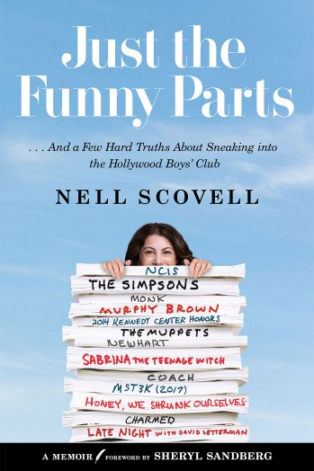

In Defense of Lean In

My latest in Vanity Fair, a good way to start the year: Why I Still Believe in Lean In
My latest in Vanity Fair, a good way to start the year: Why I Still Believe in Lean In

Here's Jordan Klepper appearing to be nice on "The Opposition." It was all downhill from here. The guy attacked me. Watch. You'll see.

Good day, LA. I said, good day. (Click here to view the appearance on FoxLA.)
Total dream situation for a writer to get to sit on stage while the hilarious host reads her jokes. Thanks The Late Show with Stephen Colbert for making this dream a reality....
Here I am talking to Kai Ryssdal. (March 22 2018 episode, sharing time with the man that's suing Cambridge Analytica).
Answering some questions at my old haunt.
This was my first bit of press for the book, so if I sound nervous, that's why. But Mark was really funny and made me feel comfortable. Click to get to the podcast episode.
I know it's just an industry rag, but I'm in the Hollywood Reporter!
Some Q&A with the first major newspaper I wrote for (while still in college). There will always be something special about the Globe for me.
I talked with Dana Schwartz about Just the Funny Parts. She asked some great questions, Read it here.
The 11 New Memoirs Everyone Will Be Talking About This Spring How great is it that they had their list go to eleven? I'm happy to be included with a bunch of other people writing about themselves.

In 2009, I helped write the Oscars' Red Carpet pre-show. Standing on the red carpet, I was inches from Beyonce, Daniel Craig, Brad Pitt, Angelina Jolie, and Taraji P. Henson. They all disappeared...
Megh Wright writes about the book over at Splitsider. (I've written for them before.)

The Hollywood Reporter reveals the cover and the book.
July 3, 2009 Hi Sarah Palin’s Alaska, I appreciate speaking directly to you, the people I serve, as your Governor. People who know me know that besides faith and family, nothing's more important to...